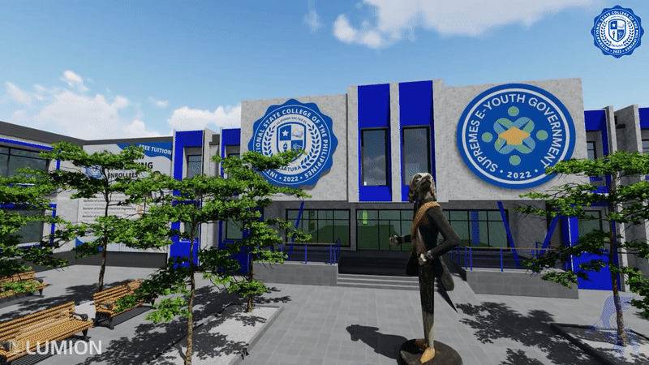

The International State College of the Philippines (ISCP) is a satirical and parodic Facebook page of a fictitious "international, extraterrestrial, and mythical university system" of the same name. It is a fictional institution created by Niño Ged, which trended in the Philippines, the ISCP is known for its witty "course offerings" and online publicity materials that make it look like a legitimate higher education institution. The "university" is the home of the (nonexistent) Blue Aspins. Its adopted school hymn is the orchestral version of "Sun and Moon" by Anees.
The satirical page features random personalities as "professors", "students", or "alumni". One of them is Filipino television host and weather forecaster Kim Atienza, who was "appointed" as the "dean of the College of Education". Atienza initially dismissed his association to the satirical "university" he first thought was a real institution of higher learning, and categorized it as a "scam" on August 6, 2022. Atienza, eventually, caught on to the trend and thanked ISCP for the "honor" of serving as its supposed educator. On his Twitter account, Atienza finally "accepted" the "appointment as Dean of Education", where he "required all students" to "submit" a "10-word reaction paper" on The Philippine Star article he "quote-tweeted".
Other Filipino personalities who have joined the trend are popular content creator Macoy Dubs, who called himself a "student"; Senator JV Ejercito, who expressed his intent to "apply" after "congratulating" Macoy Dubs; singer Ace Banzuelo who projected to "run" for "presidency of the College of Arts and Sciences Student Council"; P3PWD representative and former election commissioner Rowena Guanzon, who was "hired" as a "law professor"; and stand-up comedian James Caraan, who joked he would "teach" students of "BS Marketing Major in Events Management".
Sun CourtyardChillax as the Sun Courtyard welcomes you the moment you enter the school. Meet students, teachers, and staff along the way as you walk in the main hub of the campus. |

ISCP Main CampusISCP will be your home for the next few years. Make sure to get familiar with the campus by walking around. There are plenty of places to discover and explore during your journey. |

Moon CourtyardJust behind the Sun Courtyard is the Moon Courtyard. This is where club activities, performances, and vendors thrive. It's the perfect place to chill after class. |